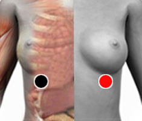

Pneumosystis Carini (jirovechii)
Par
condral - condral

Generalidades:
Los imanes van debajo de los pezones. Se manifiesta en el pulmón con Tos crónica, flemas, Bronquitis Crónica , micosis en manos. Responsable de muerte por VIH-Sida . Su asociación con Saco de Douglas- Nervio femoral, puede destruir al pulmón.
Pneumocystis Jirovechii es la más común en humanos. Pneumocystis carinii es la especie encontrada en ratas.
Es un hongo oportunista extracelular. Ataca a personas con el sistema inmune deprimido. Prolifera en el sistema respiratorio. presenta síntomas clínicos de neumonía, tos sin expectoración, disnea, fiebre, pérdida de peso, temblores, expectoración con sangre (rara) e infiltración bilateral en la radiografía de tórax. En el examen físico los síntomas no son muy específicos, pero se encuentra: incremento en el ritmo respiratorio y cardiaco.